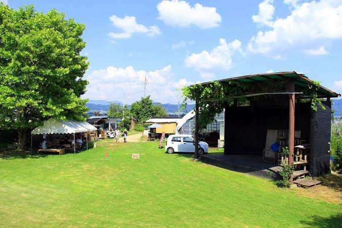
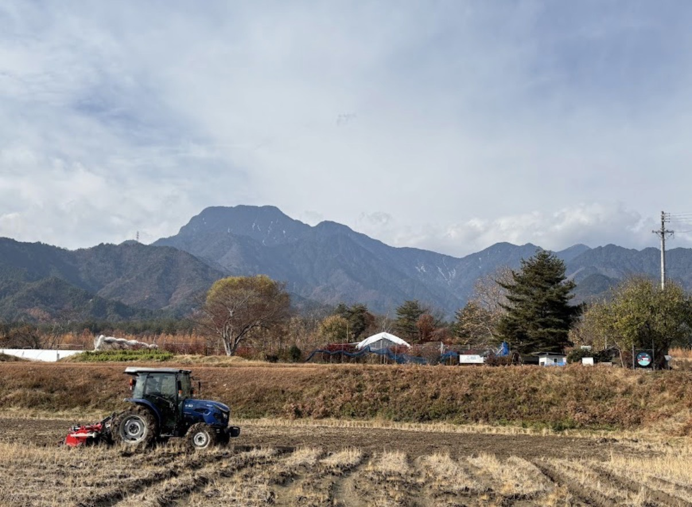
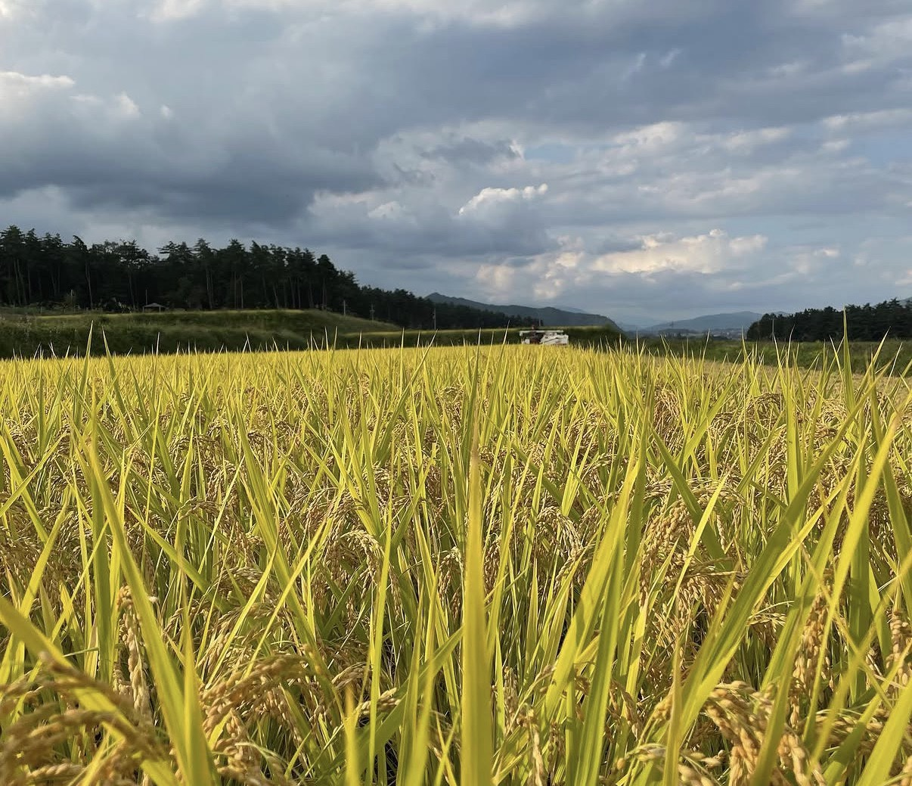
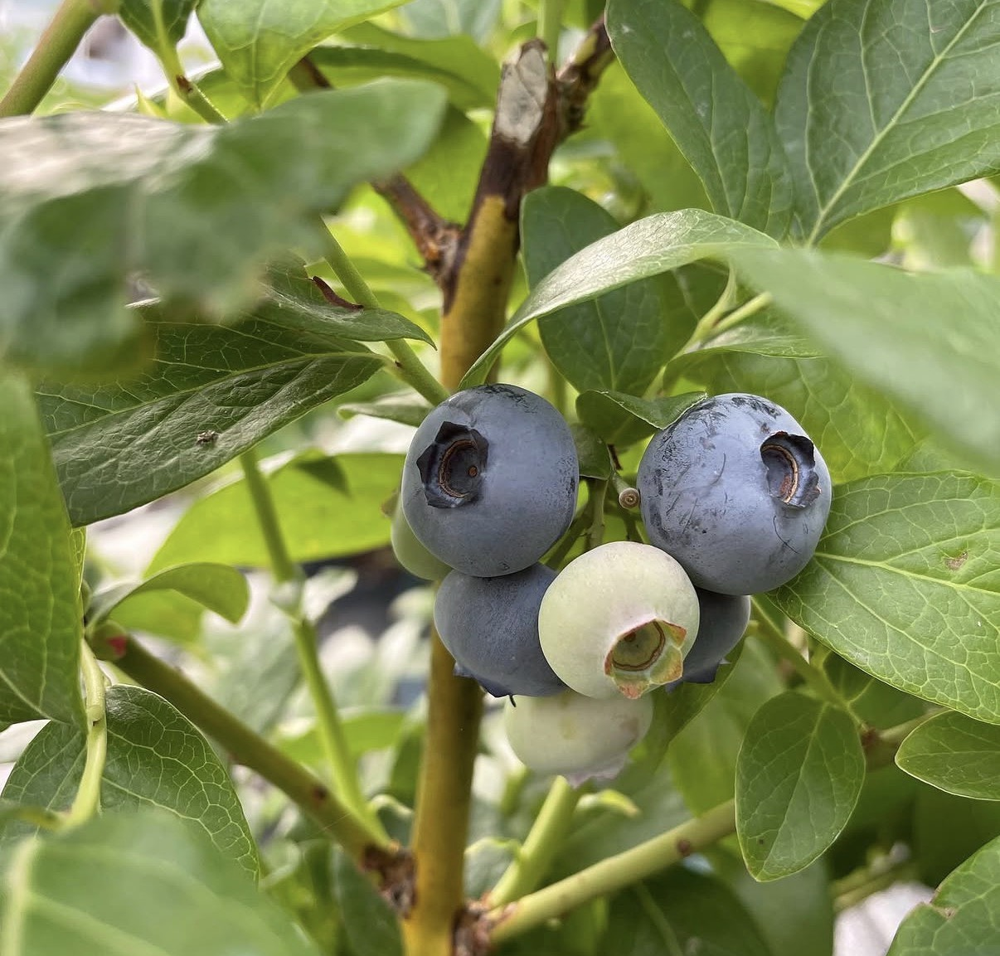
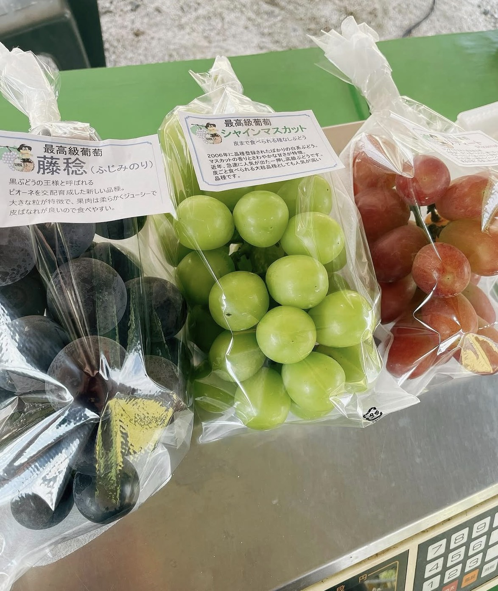
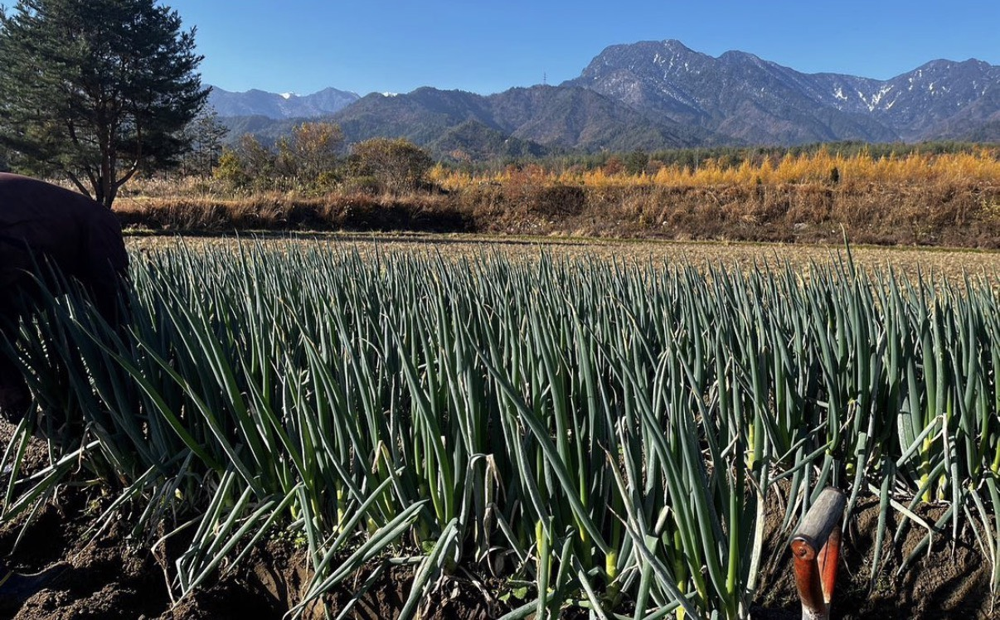
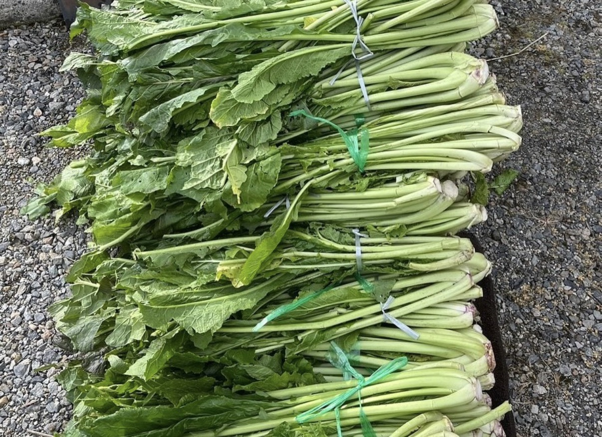
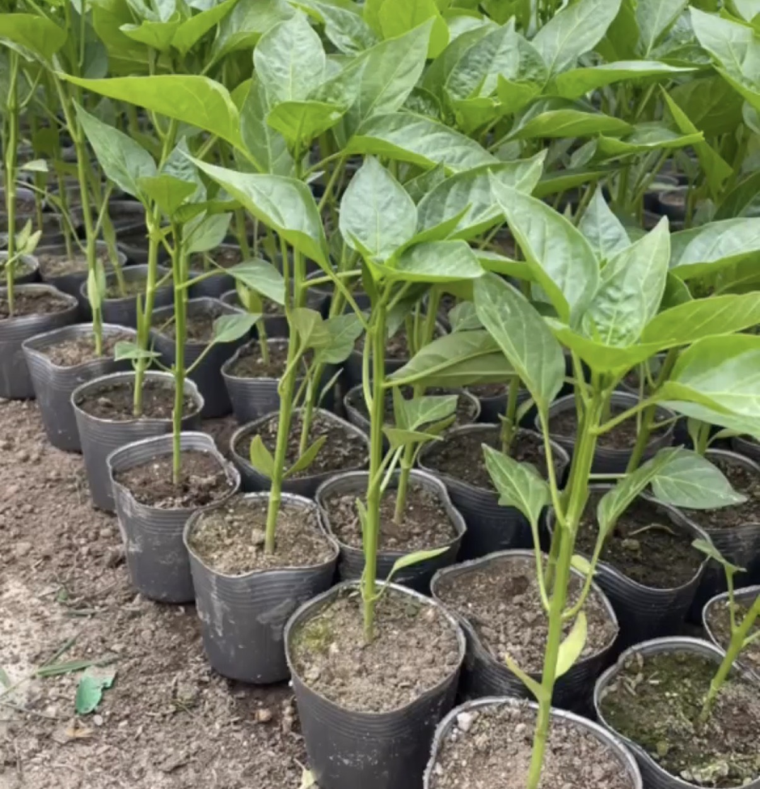
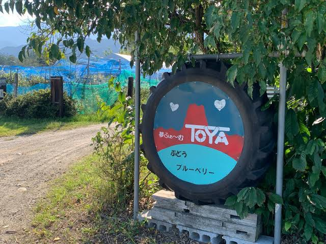

春
春は、野菜の苗を育てる大切な季節です。種から蒔いて、ひとつひとつ丁寧に育てながら、これから始まる実りの季節に備えています。
おやきの原点は畑にある。信州の自然の中で、ていねいに野菜を育てる農園です。

おいしいものは、畑から始まる。その想いを大切に、自然の流れに寄り添いながら、ひとつひとつの作物に向き合っています。食べる人の顔を思い浮かべながら育てることが、夢ふぁーむTOYAの原点です。

夢ふぁーむTOYAでは、季節ごとの恵みを大切にしながら、その時期ならではの作物をていねいに育てています。
春は、野菜の苗を育てる大切な季節です。種から蒔いて、ひとつひとつ丁寧に育てながら、これから始まる実りの季節に備えています。
夏は、みずみずしいブルーベリーの季節。自然の光をたっぷり受けて育った実には、やさしい甘みと爽やかな味わいがあります。
秋は、ぶどうとお米の季節です。ぶどうは長野パープル、シャインマスカット、リザマート、藤稔を育てています。お米は「りんりん米」を大切に育てています。
季節ごとに表情を変える畑の景色も、農園の魅力のひとつです。朝の光、風の音、土のにおいも大切にしています。
MISUZUのおやきに包まれる具材の背景には、畑で過ごした時間があります。やさしい味の奥に、土のぬくもりや季節の移ろいが息づいています。

農園の場所や周辺の様子は、Googleマップでもご確認いただけます。住所は 長野県北安曇郡松川村3363−11 です。お越しの際は、営業日やご案内情報もあわせてご確認ください。
Googleマップで見る農繁期や作業状況により、対応できる時間が変わることがあります。事前に営業カレンダーやInstagramをご確認いただくと安心です。







